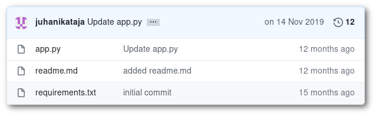

Pre-requisites, the project created in Exercise 1
In this exercise we will deploy a Python template that uses Source2Image. We will use the following GIT repository as a base:
https://github.com/CSCfi/rahti-flask-hello.git

Secondly, go to Rahti and create a Python 3.8-quay application, using your forked repository.`
python-sample-<number>, where <number> is the number in your training account.Once the application is up and running, find the URL where it is available to the internet, and visit it.